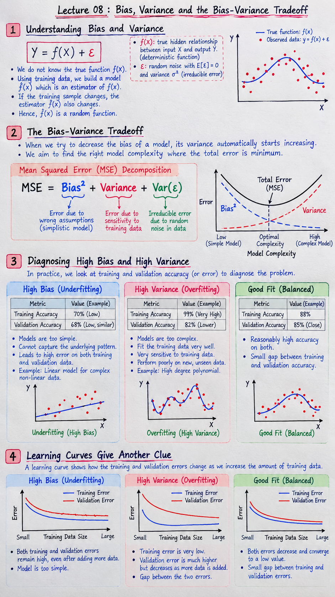

Short Notes & Visual Summary
Handwritten summary sheet and core concepts for Lecture 08:

Handwritten Summary Sheet — Lecture 08: Polynomial Regression & Assumptions of Linear Regression
- Polynomial Regression as Feature Transformation: It is NOT a new learning algorithm. We construct non-linear input features (\(\phi(x) = (x, x^2, \dots, x^n)\)) while keeping optimization linear in parameters \(\beta\). A 2D parabolic curve is represented as a flat linear hyperplane in 3D feature space \((x, x^2, y)\).
- Degree vs. Overfitting Duality: Degree 1 underfits (constant slope); Degree 2 provides optimal curvature (1 bend); Degree \(n\) creates up to \(n-1\) bends. Excessively high degrees (e.g., \(n=8\)) fit random noise, inflating validation error.
- The 5 Core Assumptions: (1) Linearity (\(\mathbb{E}[y|X] = \beta_0 + \sum \beta_j x_j\)); (2) Normality of Residuals (\(e_i \sim \mathcal{N}(0, \sigma^2)\)); (3) Homoscedasticity (\(\text{Var}(e_i) = \sigma^2\)); (4) No Autocorrelation (\(\text{Cov}(e_i, e_j) = 0\)); (5) No Multicollinearity (independent input features).
- Inference vs. Prediction Impact: Multicollinearity destabilizes coefficient estimates \(\beta\) (ruining interpretability/inference), but has less impact on pure target prediction \(\hat{y}\).
- Perfect Multicollinearity Proof: If feature column \(X_k\) is an exact linear combination of other columns, \(X c = \mathbf{0}\) for \(c \ne \mathbf{0}\), implying \((X^\top X) c = \mathbf{0}\). Thus, \(\det(X^\top X) = 0\), making \(X^\top X\) singular and non-invertible for OLS \(\hat{\beta} = (X^\top X)^{-1} X^\top y\).
Polynomial Regression as Feature Transformation
1.1 Failure of Constant Slope & Curved Data
Standard linear regression models assume a strictly constant rate of change: \(y = \beta_0 + \beta_1 x\). In real-world datasets, output metrics often accelerate non-linearly. For instance, in an internship stipend model based on project depth score \(x \in [1, 10]\):
- Moving from score 2 to 4 yields a small stipend increase.
- Moving from score 8 to 10 yields a disproportionately larger increase due to unlocking elite recruitment tiers.
Because a simple straight line cannot bend, fitting standard OLS onto curved scatter plots forces severe systematic underfitting.
1.2 Feature Mapping \(\phi(x) = (x, x^2)\) & Design Matrix Setup
Rather than designing a new non-linear optimization algorithm, we apply a feature transformation \(\phi(x)\) that expands the input space:
$$\phi(x) = (x, x^2)$$The regression model becomes:
$$y = \beta_0 + \beta_1 x + \beta_2 x^2$$Even though the target is non-linear with respect to raw feature \(x\), it remains strictly linear in its parameters \(\beta_0, \beta_1, \beta_2\). Thus, standard Ordinary Least Squares (OLS) and Gradient Descent apply directly without modification.
| Student | Raw \(x\) | Transformed \(x^2\) | Target \(y\) (Stipend ×1000) |
|---|---|---|---|
| A | 2 | 4 | 24 |
| B | 4 | 16 | 42 |
| C | 6 | 36 | 62 |
| D | 8 | 64 | 91 |
| E | 10 | 100 | 128 |
1.3 3D Mental Model: From 2D Curve to 3D Plane
Let \(z = x^2\). Substituting \(z\) yields a standard multiple linear equation: \(y = \beta_0 + \beta_1 x + \beta_2 z\). This represents a flat 2D plane embedded within 3D space \((x, z, y)\). When this flat plane is projected back down onto the 2D parabolic manifold \(z = x^2\), it appears as a smooth curved line in original \((x, y)\) space.
Polynomial Degree & Overfitting Risk
2.1 Degree-\(n\) Model Formulation
A degree-\(n\) polynomial regression expands feature space up to the \(n\)-th power of \(x\):
$$y = \beta_0 + \beta_1 x + \beta_2 x^2 + \dots + \beta_n x^n = \beta_0 + \sum_{j=1}^n \beta_j x^j$$The maximum degree \(n\) dictates the maximum number of inflection points (bends) the fitted curve can exhibit, which equals \(n-1\):
- Degree 1 (\(n=1\)): \(y = \beta_0 + \beta_1 x\) → 0 bends (Straight line).
- Degree 2 (\(n=2\)): \(y = \beta_0 + \beta_1 x + \beta_2 x^2\) → 1 bend (Parabola / U-shape).
- Degree 3 (\(n=3\)): \(y = \beta_0 + \dots + \beta_3 x^3\) → 2 bends (S-curve).
- Degree \(n\): Design matrix \(X\) contains \(n+1\) columns (including intercept column of ones).
2.2 Degree vs. Overfitting Duality
As polynomial degree increases, model capacity grows exponentially. While a low degree (\(n=1\)) underfits curved data, an excessively high degree (\(n=8\) or \(n=20\)) fits random noise in the training set.
- Degree 1 (Underfitting): High training error, high validation error. Rigid model fails to capture true signal.
- Degree 2 (Optimal Fit): Low training error, low validation error. Captures underlying physics/trend without fitting noise.
- Degree 8+ (Overfitting): Near-zero training error, extreme validation error. Curve twists wildly to pass through every individual data point.
2.3 Training Error vs. Generalization Tradeoff
A higher-degree polynomial always achieves equal or lower training MSE because it possesses more free parameters. However, lower training error does not imply a superior model. Cross-validation must be used to select degree \(n^*\) that minimizes out-of-sample generalization error.
The 5 Assumptions of Linear Regression
3.1 Inference vs. Prediction & Residual Notation
Linear Regression relies on five fundamental statistical assumptions to ensure that parameter estimates \(\hat{\beta}\) are unbiased, minimum variance (BLUE under Gauss-Markov theorem), and statistically valid for inference.
Residual Definition: The difference between observed value \(y_i\) and predicted value \(\hat{y}_i\):
$$e_i = y_i - \hat{y}_i$$3.2 Assumption 1: Linearity of Relationships
Statement: The expected value of target \(y\) is a linear combination of independent feature variables \(x_j\).
- Check: Scatter plots of \(y\) vs. \(x_j\) and Residuals vs. Fitted Values (\(\hat{y}\)). Residuals should be randomly scattered around zero without systematic curvature.
- Remedy if Violated: Apply non-linear feature transformations (Log, Square Root) or add polynomial terms (\(x^2\)).
3.3 Assumption 2: Normality of Residuals (\(e \sim \mathcal{N}(0, \sigma^2)\))
Statement: The error terms \(e_i\) follow a normal distribution with mean zero and constant variance \(\sigma^2\).
$$\mathbb{E}[e_i] = 0, \quad e_i \sim \mathcal{N}(0, \sigma^2)$$- Check: Histogram of residuals (should form a symmetric bell curve centered at 0) or Q-Q plot (points should align along 45-degree diagonal).
- Impact: Crucial for calculating valid hypothesis testing \(p\)-values, confidence intervals, and standard errors for coefficients \(\beta\).
Residual Diagnostics & Assumption Failures
4.1 Assumption 3: Homoscedasticity vs. Heteroscedasticity
Homoscedasticity: The error term variance \(\text{Var}(e_i) = \sigma^2\) is constant across all predicted values \(\hat{y}\).
Heteroscedasticity: Error variance systematically changes (e.g., residual spread widens like a funnel as \(\hat{y}\) increases).
While OLS coefficient estimates \(\hat{\beta}\) remain unbiased, their estimated standard errors are incorrect (underestimated). This inflates \(t\)-statistics and leads to false statistical significance claims.
Remedy: Logarithmic transformation \(\log(y)\), Box-Cox transform, or Weighted Least Squares (WLS).
4.2 Assumption 4: No Autocorrelation of Errors
Statement: Error terms are mutually independent across observations: \(\text{Cov}(e_i, e_j) = 0\) for \(i \ne j\).
- Check: Plot residuals against time index or observation sequence order. Durbin-Watson Test statistic \(d \approx 2\) indicates no autocorrelation.
- Violation: Common in time-series data where consecutive errors display positive or negative correlation trends.
4.3 Diagnostic Plots & Remedial Transformations
| Residual Pattern | Violated Assumption | Recommended Action |
|---|---|---|
| U-shaped / Parabolic curve vs. \(\hat{y}\) | Linearity | Add polynomial terms (\(x^2\)) |
| Funnel / Cone shape (widening error) | Homoscedasticity | Apply \(\log(y)\) or \(\sqrt{y}\) transform |
| Right / Left skewed histogram | Normality | Target transformation or robust regression |
| Cyclical / Trending sequence plot | No Autocorrelation | Add autoregressive lag features |
Multicollinearity & Matrix Singularity Proof
5.1 Definition & Linear Dependence Setup
Multicollinearity occurs when two or more input features in a multiple regression model are highly linearly correlated, making it impossible to isolate the individual contribution of each feature on target \(y\).
Consider two features \(X_1\) and \(X_2\) predicting \(Y\):
$$Y = \beta_0 + \beta_1 X_1 + \beta_2 X_2 + \varepsilon_1$$If \(X_1\) and \(X_2\) are highly correlated (\(X_1 = a_0 + a_1 X_2 + \varepsilon_2\)), substituting \(X_1\) reduces the model to effectively a function of \(X_2\) alone, causing coefficients \(\beta_1\) and \(\beta_2\) to become unstable and produce huge standard errors.
5.2 Mathematical Proof that \(X^\top X\) Is Singular
Recall the closed-form Ordinary Least Squares (OLS) normal equation for weights \(\hat{\beta}\):
$$\hat{\beta} = (X^\top X)^{-1} X^\top y$$- Linear Dependence Assumption: If columns of design matrix \(X\) are perfectly linearly dependent, there exists a non-zero column vector \(c \ne \mathbf{0}\) such that: $$X c = \mathbf{0}$$
- Premultiply by \(X^\top\): $$X^\top (X c) = X^\top \mathbf{0} \implies (X^\top X) c = \mathbf{0}$$
- Implication for Kernel / Nullspace: Because \(c \ne \mathbf{0}\) maps to \(\mathbf{0}\), the matrix \(X^\top X\) maps a non-zero vector to zero.
- Singularity & Zero Determinant: Thus, the columns of \(X^\top X\) are linearly dependent, which means: $$\det(X^\top X) = 0$$
- Conclusion: The inverse matrix \((X^\top X)^{-1}\) does not exist. OLS cannot compute closed-form estimates \(\hat{\beta}\).
5.3 3×3 Numerical Matrix Breakdown & VIF
Consider a design matrix \(X\) where Column 3 is the exact sum of Column 1 and Column 2 (\(C_3 = C_1 + C_2\)):
$$X = \begin{bmatrix} 1 & 1 & 2 \\ 1 & 2 & 3 \\ 1 & 3 & 4 \end{bmatrix}$$Computing \(X^\top X\):
$$X^\top X = \begin{bmatrix} 1 & 1 & 1 \\ 1 & 2 & 3 \\ 2 & 3 & 4 \end{bmatrix} \begin{bmatrix} 1 & 1 & 2 \\ 1 & 2 & 3 \\ 1 & 3 & 4 \end{bmatrix} = \begin{bmatrix} 3 & 6 & 9 \\ 6 & 14 & 20 \\ 9 & 20 & 29 \end{bmatrix}$$Evaluating determinant: \(\det(X^\top X) = 3(14 \cdot 29 - 20 \cdot 20) - 6(6 \cdot 29 - 20 \cdot 9) + 9(6 \cdot 20 - 14 \cdot 9) = 3(6) - 6(-6) + 9(-6) = 18 + 36 - 54 = 0\).
Since \(\det(X^\top X) = 0\), matrix inversion fails.
To detect multicollinearity in non-perfect cases, compute VIF for feature \(j\):
$$\text{VIF}_j = \frac{1}{1 - R_j^2}$$Where \(R_j^2\) is the \(R^2\) score from regressing feature \(X_j\) on all other features. A \(\text{VIF} > 10\) indicates severe multicollinearity that requires dropping or combining correlated features.
Original PDF Notes
Below is the original PDF document for your reference: